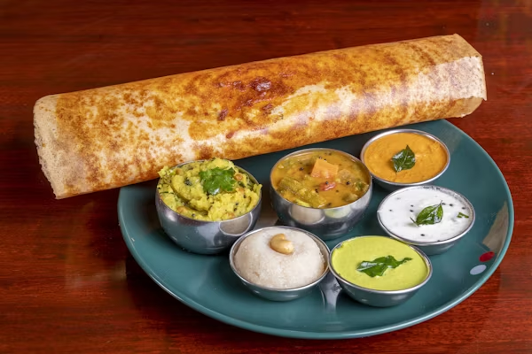
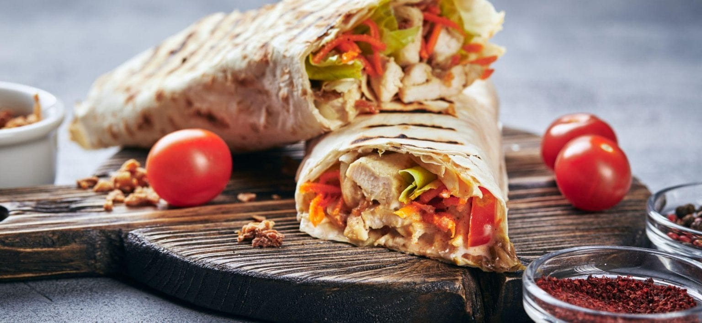

Indian Recipes
Biryani
Non-VegButter Chicken
Non-VegPaneer Tikka
Veg

Masala Dosa
VegDal Makhani
VegItalian Recipes
Pizza
Veg
Pasta
Veg
Risotto
VegTiramisu
VegLasagna
Non-VegRussian Recipes
Borscht
Veg
Beef Stroganoff
Non-VegPelmeni
Non-VegOlivier Salad
VegBlini
VegChinese Recipes

Fried Rice
VegDumplings
VegKung Pao Chicken
Non-Veg
Spring Rolls
VegHot & Sour Soup
VegOther Recipes
Sushi
Japan
Non-VegTacos
Mexico
Non-Veg

Shawarma
Middle East
Non-Veg
Paella
Spain
Non-VegPoutine
Canada
VegMoussaka
Greece
Non-Veg